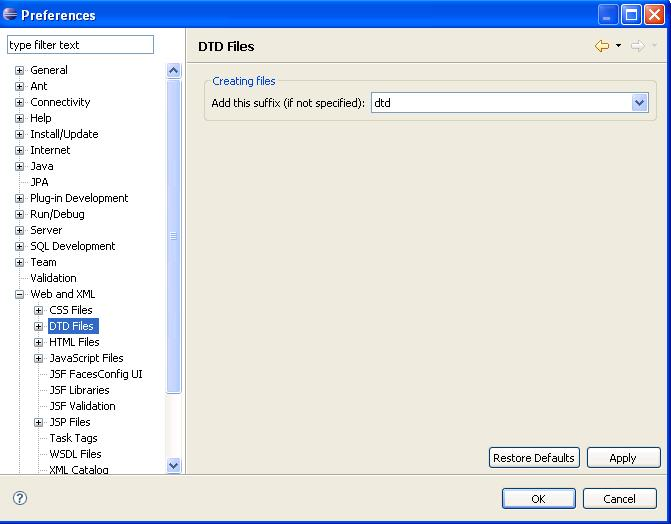
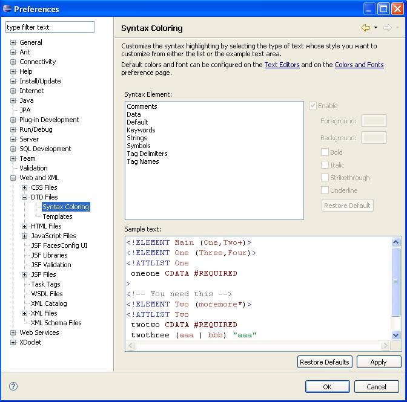
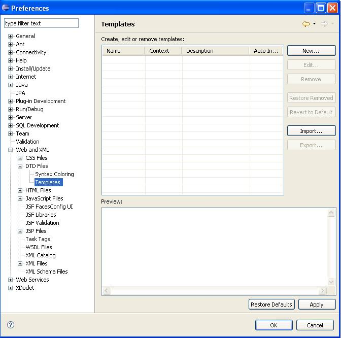

DTD Preference Pages
Steps:
- Select Window->Preferences... from the menu bar.
- Select General->Web and XML->DTD Files in the left pane.
- Verify the translations for this page.

- Select General->Web and XML->DTD Files->Syntax
Coloring in the left pane.
- Verify the translations for this page.

Note: the Color dialog invoked from the Syntax Coloring preferences
pages is from the native operating system. Depending on the locale set
in the operating system, the Color dialog may or may not be translated.
- Select General->Web and XML->DTD Files->Templates in
the left pane.
- Verify only the contents in the table (names, contexts,
descriptions) *There is currently nothing in the table, so nothing to
verify.

- Press the Cancel button from the Preferences dialog. Discard
any changes.